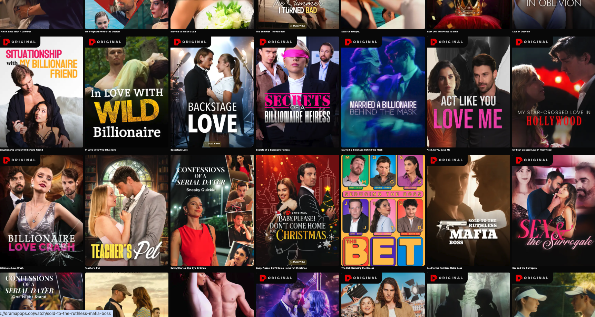

Make Unit Education
The Vertical Leap
Writing · Production · AI · Real-Time · Growth
Becoming a full-stack filmmaker for vertical drama. The industry has moved vertical — and it's not coming back.
Get in touch →︎The Shift
The industry has moved vertical.
- Shorter formats
- Faster interaction
- AI accelerates the entire pipeline
The Opportunity
A vertical series is a lab for IP.
- Low cost
- Fast testing
- Instant audience feedback
- The most successful genre is some version of telenovelas — a language with a long tradition in the Latin community
$8.4B
Global vertical drama market by 2031 — from $4.17B in 2024
45min
Average daily engagement per session on vertical drama platforms
40M+
Users on dedicated vertical drama platforms globally, with 1M+ monthly installs
Latinx Advantage
A genre we already know how to tell.
Telenovelas aren't new to the Latin community — they're a decades-long tradition of serialized drama, emotional hooks, and mass audience engagement. Vertical drama is the same language, on a new screen. That's a head start.

Why Vertical Drama
New economics. Legacy media is leaning in.
Freemium & micro-paymentsSerialized short dramas are monetized through freemium, subscription, and micro-payment models — creating new revenue streams outside traditional distribution.
AI-tested conceptsPlatforms are increasingly using AI tools to test story concepts and predict engagement before committing to full production.
Proof-of-concept pipelineTraditional TV and film producers are exploring verticals as proof-of-concept pipelines before scaling to longer formats.
Disney+ goes verticalAt CES 2026, Disney+ announced mobile-oriented vertical video integration — a signal that legacy media is now following the format.
Curriculum
Full Stack Filmmaker. Four pillars.
01
Writing
- Writing for vertical drama
- Hooks and super hooks
- Melodrama, melodrama and… melodrama
02
Producing
- The vertical production cycle
- The toolkit
- Full stack budgets
03
Brand Building & Growth
- Build your brand
- Getting those eyeballs
- The full stack marketeer
- Extended universe
04
AI Collaboration
- Build me a pitch deck
- Expand a story
- Build a teaser
- Build a marketing plan
Instructors
Industry practitioners, not academics.

Luz Orlando Brennan
Director · Writer · Producer
Argentina-based award-winning filmmaker. La Estrella que Perdí — Best Feature, Cine Las Américas 2025. El Prófugo (Berlinale), Dior (Annecy), Premio Madrid Film Office · MIANIMA 2025. ENERC and UBA.

Ezequiel Asnaghi
Producer · Writer · Actor
Founder of Make Unit. 20+ years across the US, Europe, Asia, and Latin America. Game of Thrones VR (HBO/Framestore, Emmy-nominated), Science Museum London, Objeto do Tempo (SESI), Google Creative Lab.

Matthias Metternich
Brand Builder
CEO of Kiala (#1 greens brand on TikTok & Amazon). Co-founded Art of Sport with Kobe Bryant — scaled to 30,000 retail doors through 500+ influencers. Full-stack growth: algorithm, affiliates, retail, community.

Carina Haller
Global Marketing Specialist
Co-producer, LA Brazilian Film Festival (18 seasons). Warner Bros.: Barbie, Dune, Minecraft. Video game campaigns: World of Warcraft, Pac-Man.
Ready to make the leap?
Get in touch to learn about the next cohort, pricing, and dates.
hello@makeunit.com